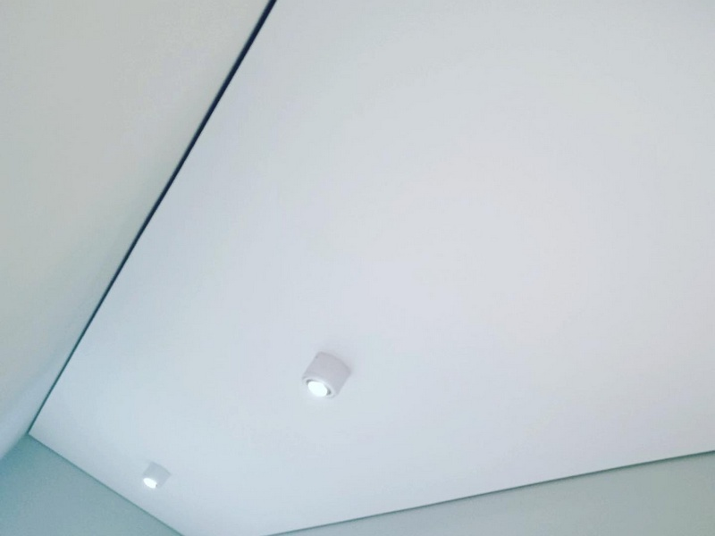
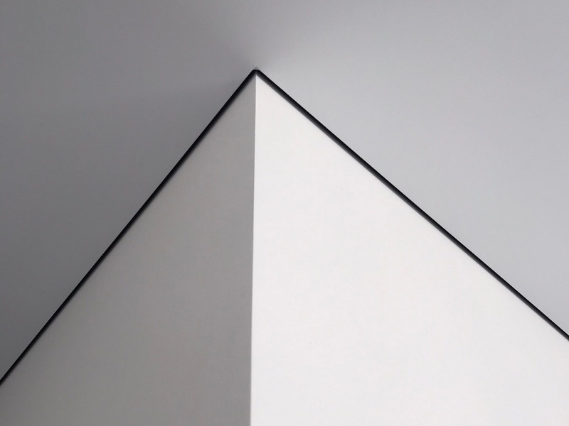

Теневой натяжной потолок

Наша компания Nova Stelya предлагает киевлянам и жителям области новинки в сфере натяжных потолков – теневые натяжные потолки.
Цены на теневой натяжной потолок в Киеве
| ✅ Теневой потолок в коридор: | от 3200 грн. |
| ✅ Теневой потолок на кухню: | от 5100 грн. |
| ✅ Теневой потолок в спальню: | от 7000 грн. |
| ✅ Теневой потолок в гостиную: | от 8000 грн. |
Суть теневых натяжных потолков
Эта новинка устраняет один из немногих недостатков натяжных потолков. В случае неровных стен натяжное полотно эту неровность подчеркнет. Происходит это из-за того, что само полотно идеально ровное и имеет другую фактуру и цвет, по сравнению со стеной. Поэтому любая неровность становится более заметной. А если используется еще и декоративная вставка, которая закрывает паз в багете, через который заводится натяжное полотно, то неровность еще более становится видимой.
Теневой натяжной потолок решает эту проблему кардинально. В нем отсутствует стыковка полотна со стеной. Остается зазор шириной 6 мм. Зрительно кажется, что потолок парит в воздухе. Выглядит очень свежо и оригинально.
Конструкция теневого натяжного потолка
Такой эффект парения достигается за счет особой конструкции профиля, с помощью которых натяжное полотно крепится к стенам. В настоящее время существует три их вида:
- EuroKraab и Euroflexy для пленочных потолков;
- Euroslott – для тканевых потолков.
Профиль EuroKraab

Их размеры указаны на рисунке. Эффект парения достигается за счет того, что ребро профиля на котором расположен паз для фиксации натяжного полотна резко отклонено в сторону от стены.
То есть полотно его закрывает и делает для наблюдателя снизу невидимым.
Сам профиль окрашен в черный цвет, поэтому все, что выше этого ребра тоже невидимо в густой тени – между полотном и базовым потолком света нет. Поэтому такой натяжной потолок и назвали теневым.
Профиль Euroflexy

Этот профиль имеет только одну разновидность – для крепления на стене.
Сама конструкция немного похожа на стеновой профиль EuroKraab.
Отличия:
- ребро имеет меньший наклон;
- высота профиля 44 мм, то есть потеря высоты будет большей.
Профиль Euroslott

Предназначен для тканевых натяжных потолков. Его отличия:
- наличие демпферного узла для надежной фиксации полотна;
- ребро не имеет наклона, поэтому маскировка происходит за счет насыщенного черного цвета профиля;
- высота профиля 35 мм.
Преимущества теневого натяжного потолка
Главное преимущество – безукоризненный внешний вид даже при неровных стенах. Никакой другой вид натяжных потолков этого обеспечить не могут. Другими достоинствами этого варианта являются:
- Свежий, современный вид. Теневых натяжных полотен в Украине еще очень мало, поэтому смотрятся они эксклюзивно.
- Отсутствие необходимости в декоративной вставке для маскировки паза.
- Цена теневого натяжного потолка ниже, чем у бесщелевого варианта за счет меньшей трудоемкости монтажа.
- Отличная сочетаемость с 3D рисунками на потолке и стенах, а также с объемным рельефом на них.
- Возможность замены обоев без снятия натяжного потолка. Конечно, из-за зазора в 6 мм придется работать в стесненных условиях, но это все равно будет быстрее и дешевле, чем снятие полотна.

Что может предложить компания Nova Stelya
Мы начали одни из первых устанавливать теневые натяжные потолки в Киеве и в городах и поселках области − Вышгород, Буча, Белогородка, Боярка и т.д. Работаем со всеми видами профилей.
Наши специалисты могут установить, как одноуровневый теневой натяжной потолок, так и сделать его в составе многоуровневой конструкции. Одним из самых востребованных вариантов является сочетание теневого потолка с парящим. Для этого по периметру, в районе зазора мы устанавливаем светодиодные ленты. То есть в дневное время у вас будет теневой парящий потолок, в ночное время – парящий потолок с эффектным световым контуром по периметру. При желании вы сможете менять цвет этого контура.
Также мы выполняем в теневых потолках ниши для установки светильников. Например, трековую систему, которая стала набирать популярность в жилых помещениях. Словом, специалисты Nova Stelya создадут у вас над головой стильное, оригинальное пространство, которое будет украшением вашего интерьера.
Преимущества компании Nova Stelya
Nova Stelya начала одной из первых в Киеве и области устанавливать теневые натяжные потолки. Поэтому, благодаря накопленному опыту, наши специалисты предлагают интересные варианты, максимально использующие возможности этого варианта.
Своим клиентам мы гарантируем:
- Качественное выполнение работ, соответствующее столичному статусу. В Киеве огромная конкуренция в сфере строительных услуг, в т.ч. по установке натяжных потолков. И уже тот факт, что мы почти 10 лет на этом рынке красноречиво говорит о востребованности нашей компании.
- Использование только экологически безопасных материалов от известных брендов. Вся наша продукция сертифицирована. Гарантия на пленочный натяжной потолок – 12 лет. С клиентом заключаем договор.
- Оперативность выполнения работ. Работаем несколькими монтажными бригадами и точно выполняем сроки, записанные в договоре. Обычно, заказ выполняется на 2-3 день. В случае сложного проекта сроки увеличиваются.
- Конкурентные цены, что наглядно видно после ознакомления с нашим прайсом. Кроме того, мы постоянно проводим различные акции, предоставляя скидки на различные варианты натяжного потолка, в т.ч. и теневого.

Ответы на наиболее часто задаваемые вопросы по теневым натяжным потолкам:
🤗 Какова цена теневого натяжного потолка?
В нашей компании цена составляет от 250 грн/м2 для пленочного варианта и от 700 грн/м2 для тканевого варианта. Она зависит от применяемых багетов и полотна. Плюс создание системы освещения и т.д.
🤗 Герметичен ли теневой пленочный натяжной потолок?
Следует понимать, что зазор между полотном и стеной лишь зрительный. Выше, вне поля зрения полотно плотно примыкает к стене. Поэтому герметичность точно такая же, как и стандартного пленочного натяжного потолка.
Иногда клиенты просят сделать потолок «дышащим», чтобы выравнивалось давление по обеим сторонам натяжного полотна. Для этого мы используем разновидность профиля EuroKraab − AIRKRAAB. Он имеет отверстия для свободной циркуляции воздуха. В этом случае герметичности потолка не будет.
🤗 Вы устанавливаете тканевые теневые натяжные потолки?
Да. Используем профили Euroslott и натяжные полотна известных брендов − Clipso, Descor. Цена – от 700 грн/м2.
🤗 Можно ли установить теневой натяжной потолок с криволинейным контуром?
Да, мы надрезаем багет и изгибаем его в нужный контур. Но это имеет смысл, если в помещении криволинейные стены. Ведь потолок должен повторять их контур.
🤗 Какова потеря высоты помещения при установке теневого натяжного потолка?
Эта величина зависит от используемого профиля. Минимальная потеря высоты составит 20 мм – для потолочного профиля EuroKraab, максимальная − 44 мм при использовании профиля Euroflexy. Но потеря высоты может быть больше, если это будет двухуровневая конструкция, будет создана ниша для светильников и т.д.